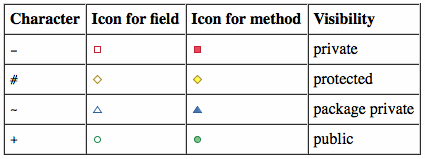

U zadatku je potrebno napisati klase kako je navedeno dijagramom klasa. U svim klasama je potrebno implementirati atribute, konstruktore i metode kako su prikazane na dijagramu klasa. Slobodno možete dodati i implementirati dodatne metode, atribute i konstruktore.
Napomena: Sve klase i sučelja imaju javnu vidljivost i nalaze se u paketu hr.fer.oop.
Legenda vidljivosti u dijagramu klasa:

U zadatku je potrebno implementirati obradu brodskog dnevnika ulova (catch log) ribarskog broda. Dnevnik stiže kao niz redaka teksta (String[]), a potrebno ga je pretvoriti u zapise o ulovu te implementirati odgovarajuću hijerarhiju vlastitih iznimki.
Svaki redak dnevnika opisuje jedan ulov u formatu:
VRSTA,TEZINA,LOKACIJA
gdje su polja odvojena zarezom, npr. TUNA,42.5,Adriatic Sea. Prilikom obrade svakog polja potrebno je zanemariti moguće razmake prije i iza vrijednosti. Redci se broje od 1 (prvi element polja lines je redak 1).
Vrsta ribe predstavljena je pomoću FishSpecies i može biti: TUNA, SARDINE, MACKEREL, SEABASS.
Klasa CatchRecord predstavlja jedan uspješno pročitan zapis o ulovu: vrstu, težinu u kilogramima i lokaciju ulova.
Klasa CatchLogException je provjeravana iznimka koja pamti redni broj retka u kojem je došlo do pogreške (getRow()).
Klasa RowFormatException baca se kada redak nema točno tri polja odvojena zarezom, ili kada se polje s težinom ne može pretvoriti u broj.
Klasa InvalidSpeciesException baca se kada naziv vrste (nakon uklanjanja praznina i pretvorbe u velika slova) ne odgovara nijednoj vrijednosti FishSpecies; pamti pročitani, neispravni naziv (getInvalidSpecies()).
Klasa InvalidWeightException baca se kada je vrijednost težine uspješno pretvorena u broj, ali nije veća od 0 (getWeightKg()).
Klasa LogFullException je neprovjeravana iznimka koja pamti kapacitet dnevnika (getCapacity()).
Klasa CatchLogParser u konstruktoru prima kapacitet dnevnika (capacity) - najveći broj zapisa koje polje records može sadržavati. Možete pretpostaviti da je kapacitet uvijek strogo pozitivan.
Metoda parseLog(String[] lines) obrađuje redom svaki redak ulaznog polja:
RowFormatException;FishSpecies, dogodit će se InvalidSpeciesException;InvalidWeightException;CatchRecord i dodaje u polje records.Sve tri iznimke iz prethodna tri koraka metoda parseLog obrađuje interno, za svaki redak zasebno: redak se preskače, brojač errorCount se poveća za 1, a obrada nastavlja sa sljedećim retkom. Ako u trenutku dodavanja novog zapisa polje records nema više slobodnog mjesta (broj već pohranjenih zapisa jednak je capacity), dogodit će se LogFullException. Nju metoda parseLog ne obrađuje interno - ona izlazi van metode i obrada dnevnika se odmah prekida, bez obzire koliko je redaka ulaznog polja ostalo neobrađeno.
Metoda getRecords() vraća novo polje (novu instancu) koje sadrži sve trenutno pohranjene zapise, točne duljine, bez praznih mjesta na kraju i u izvornom redoslijedu unosa. Vraćeno polje ne smije biti isto polje koje se koristi unutar klase.
Metoda getTotalWeightKg() vraća zbroj težina svih trenutno pohranjenih zapisa (0 ako nema zapisa).
Napomena: Sve ostale detalje (nasljeđivanje, modifikatore vidljivosti i metode) potrebno je implementirati prema UML dijagramu.
Primjer korištenja:
String[] lines = {
"TUNA,42.5,Adriatic Sea",
"sardine, 3.2 ,Kvarner", // ok - species and numbers are trimmed
"MACKEREL,-5,Adriatic Sea", // InvalidWeightException (line 3)
"SEABASS,12.0", // RowFormatException - too few fields (line 4)
"SHARK,10.0,Adriatic Sea", // InvalidSpeciesException (line 5)
"TUNA,abc,Adriatic Sea" // RowFormatException - weight is not a number (line 6)
};
CatchLogParser parser = new CatchLogParser(10);
parser.parseLog(lines);
System.out.println("Successfully read records: " + parser.getRecordCount()); // 2
System.out.println("Number of errors: " + parser.getErrorCount()); // 4
System.out.println("Total catch weight: " + parser.getTotalWeightKg()); // 45.7
try {
CatchLogParser small = new CatchLogParser(1);
small.parseLog(new String[] {
"TUNA,10.0,Adriatic Sea",
"SARDINE,5.0,Kvarner" // log is full -> LogFullException
});
} catch (LogFullException e) {
System.out.println("Log is full, capacity: " + e.getCapacity());
}
Očekivani ispis:
Successfully read records: 2
Number of errors: 4
Total catch weight: 45.7
Log is full, capacity: 1